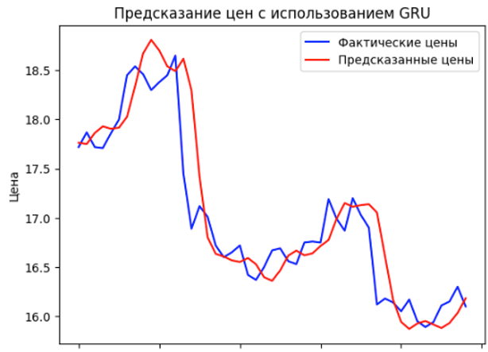
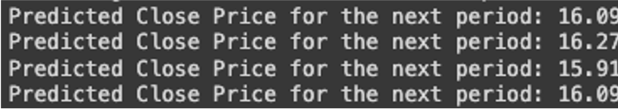

Stock markets are inherently uncertain and volatile. Forecasting price dynamics aids investors and traders in making informed decisions and managing risks amid an unstable environment.
Modern data collection and storage technologies enable the accumulation and analysis of large volumes of structured and unstructured financial market data. This holds the potential for developing more accurate and robust forecasting models based on neural networks.
Data for this study were sourced from the Finam broker website, as obtaining them from the official Moscow Exchange site proved unfeasible. The latter offers a limited selection of tools, necessitating a paid subscription for access to comprehensive data.
The dataset, stored in a CSV file, comprises five attributes: opening, closing, high, and low prices, alongside trade volume, each timestamped for visualization purposes.
Anomalies, represented by abrupt price spikes within 1-5 candlesticks (depending on the timeframe), were initially removed using Gaussian filtering and the Isolation Forest method. Additionally, due to the stock market's five-day trading week, weekends were excluded. This action did not affect the outcome, as alternative methods were employed for handling gaps in the data, with the selected approach proving most effective in terms of quality and efficiency. Subsequently, data normalization via Min-Max Scaling facilitated network training.
For this task, a plethora of models were available, among which VARMAX (Vector Autoregressive Moving-Average with Exogenous Variables) and GRU (Gated Recurrent Unit) were chosen.
GRU represents an enhanced version of conventional recurrent neural networks, boasting fewer parameters and typically simpler training procedures. Equipped with built-in gating mechanisms, GRU effectively mitigates the vanishing gradient problem, regulating information flow within the network to retain or discard pertinent information during training.
This capability enables the network to memorize longer-term dependencies, preserving information across multiple time steps. Notably, GRU outputs data with timestamps, facilitating straightforward visualization.
Results: mea = 0,2351; mse = 0,1293;
VARMAX extends the VAR model, incorporating exogenous variables that may influence the time series but are not part of it. Evidently, VARMAX inherits the advantages of VAR while augmenting forecasting quality by accommodating external factors. Initially lacking timestamps in its output, VARMAX presents data in a list format, rendering visualization challenging.
Results: mae= 0,19384; mse = 0,10253;
Developing a neural network for market analysis and prediction presents a tangible yet formidable endeavor. Although the proliferation of data augurs well for training, the concomitant escalation in analysis and preparation complexity poses formidable challenges. To enhance future endeavors, a proposal is made to diversify model structures, incorporating a hybrid approach with three models, alongside integrating textual news analysis.